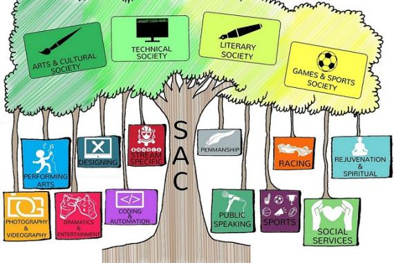
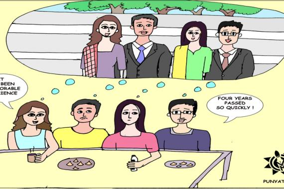

Steady Doesn't Always Win The Race:
Internet Speed at NITR
Internet nowadays has become even more necessary than the bare necessities of water, air and food.It is
the students' haven for knowledge, information and entertainment. With tests and study courses becoming
online, students no longer have to look for offline study centers and classes,to study and prepare for their
futures. Whether it is a small formula or an entire chapter; the internet has the tools that can clear ones’
doubts and can be referred to gain more knowledge.To help the students, NITR provides internet or aptly,
has a Local Area Network (LAN) into which systems can join and share the network, as well as Wireless
Fidelity Mechanism (Wi-Fi) which allows users to share data wirelessly; at certain places around campus.
The LAN services are available daily, but only for a stipulated time (5.15 PM to 8 AM) on weekdays and
workdays. The services are provided throughout the day during weekends, holidays and during
examinations as well.

Introspecting the Dwindling Club Culture
NIT Rourkela boasts of a rich and vibrant club culture. The institute has a well-structured SAC (Student Activity Centre) comprising of four societies namely Arts and Cultural, Literary, Technical and the Games and Sports society. The structure not only helps in providing an ordered hierarchy but also helps in maintaining the integrity of the system, resulting in a smooth functioning of the various clubs under its canopy. It has served as an ideal launch pad to pursue one's passion and fortify the required skills. To cater to the needs of extra-curricular we have 42 registered clubs and thus, NITR renders a myriad of opportunities to its students to pursue their passion.

Assaying The Souvenir Predicament
The Souvenir Booklet is more often a collection of memories from your engineering life, rather than a mere token of love from your alma mater. Starting from the individual entries, to the final compiled message, the gimmicks during the photo-shoots leading up to finally receiving the printed hard copy in your hands – it is indeed, an emotional ride. Yet, this year, due to unavoidable snags and delays the sanctity of the process became questionable.